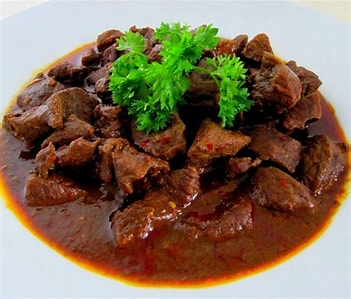

Resep Rendang

Rendang merupakan hidangan khas Minangkabau yang kaya rempah. Berikut resep rendang yang dapat anda buat sendiri di rumah :
Bahan - Bahan :
- 500 gram daging sapi (pilih potongan bagian yang berlemak)
- 2 lembar daun kunyit
- 2 lembar daun jeruk
- 2 batang serai, memarkan
- 4 lembar daun salam
- 400 ml santan kelapa kental
- 200 ml santan kelapa encer
- 2 sendok makan minyak kelapa atau minyak sayur
Bumbu Halus :
- 8 siung bawang merah
- 4 siuang bawang putih
- 4 buah cabai merah
- 2 cm jahe
- 2 cm kunyit
- 2 cm lengkuas
- 2 sendok teh ketumbar
- 1 sendok teh jintan
- 3 butir kemiri
Bumbu Kering :
- 1 sendok makan kelapa parut, sangrai hingga kecoklatan
- Garam secukupnya
- Gula secukupnya
Cara Membuat Rendang :
- Haluskan semua bahan bumbu halus
- Panaskan minyak dalam wajan, tumis bumbu halus hingga harum dan matang
- Masukkan serai, daun kunyit, daun jeruk, dan daun salam ke dalam tumisan bumbu. Aduk hingga rata
- Tambahkan potongan daging sapi ke dalam tumisan. Aduk rata hingga daging berubah warna.
- Tuangkan santan kelapa kental dan santan kelapa encer ke dalam wajan. Aduk hingga rata
- Masukkan kelapa parut sangrai, garam, dan gula secukupnya. Aduk rata dan biarkan mendidih
- Setelah mendidih, kecilkan api dan biarkan rendang masak dengan api kecil hingga santan mengental, dan daging empuk (Proses ini memakan waktu beberapa jam, dan rendang akan menjadi kering dan berwarna kecokelatan)
- Setelah matang angkat dan sajikan rendang dalam piring.